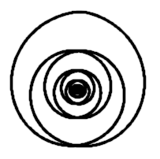

Torkado
Zum
Inhaltsverzeichnis für: "Qualitatives Torkado-Modell"
(Hypothesen und Studien zu freien 3D-Schwingungen)
Inhaltsverzeichnis für die früheren Texte
Stand
26.07.2004: Download torkado.de
(11,4
MB, ohne Früchte-Bilder)
Früchte-Bilder-Download für
Verzeichnis images (14.6 MB)
Java-Applets (Torus, Torkado, etc.) mit Download
Forum "Zauberspiegel Wissenschaft Ideenfabrik"
 |
Gabi
Müller Email: info@aladin24.de |